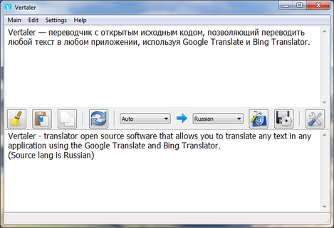
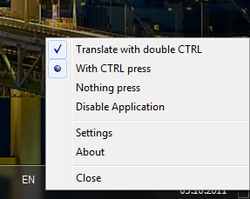
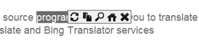
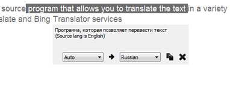
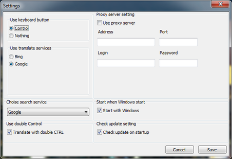
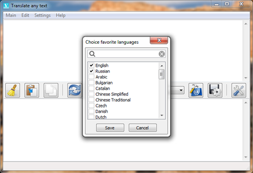

Features
This is the main window of the program, it arises if double click on an icon in TaskBar, you can insert here any text and translate it. Also from here is possible to open options of the program and a choose of the basic languages
This is the menu of the TaskBar icon, it arises if to press of the right button of the mouse on an icon in TaskBar, here is possible to replace occurrence method of an popup window for translation and to cause dialogues About and Options.
This is the popup window, appears it when you select the text, having pressed a hotkey, by default it Ctrl. In this window you can press the translate button, copy the selected text, also you can press the search button and will open browser with the search service established in settings, and open the main window of the program, the text will appear in it.
This is the popup window, appears, when press the translate button in earlier appeared window. Also you can choose any other target language and copy the translated text.
This is the setting window. You can choose the way of a conclusion of an popup window for translation, services Google Translate or Bing Translator, setup proxy server settings and choose start program with OS or not.
Here you can choose favourite languages which then will be is high in the list.